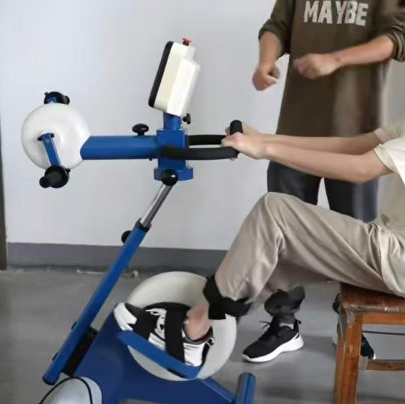
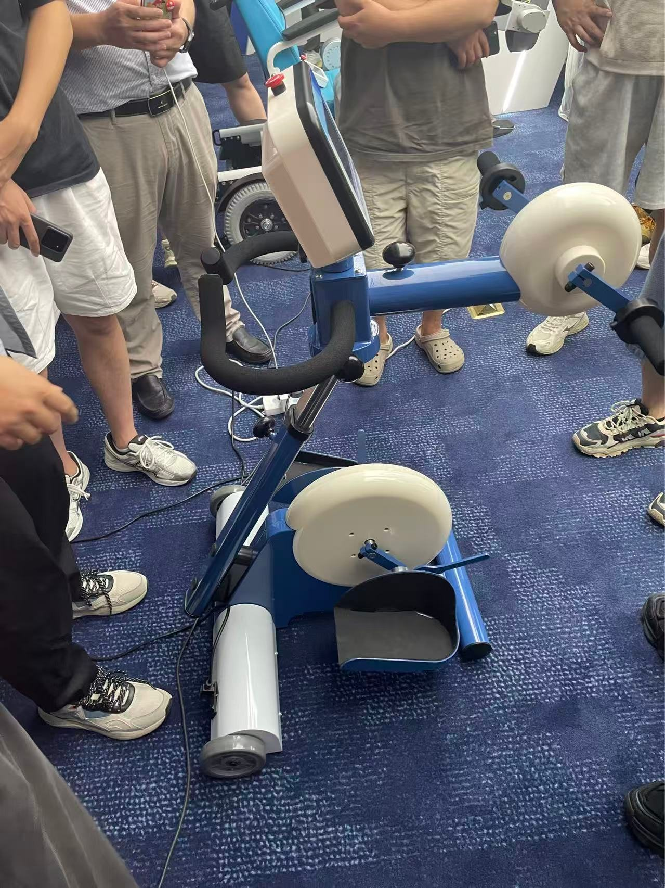
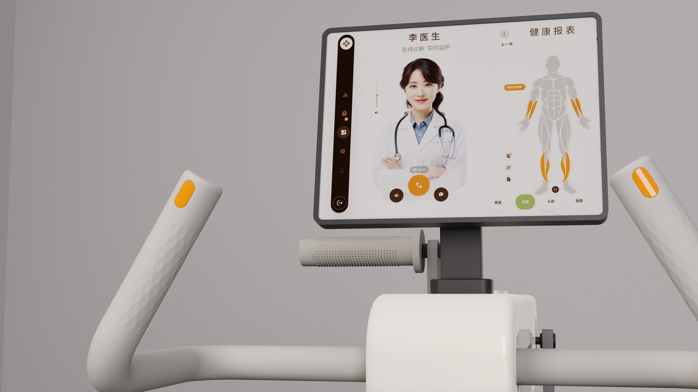
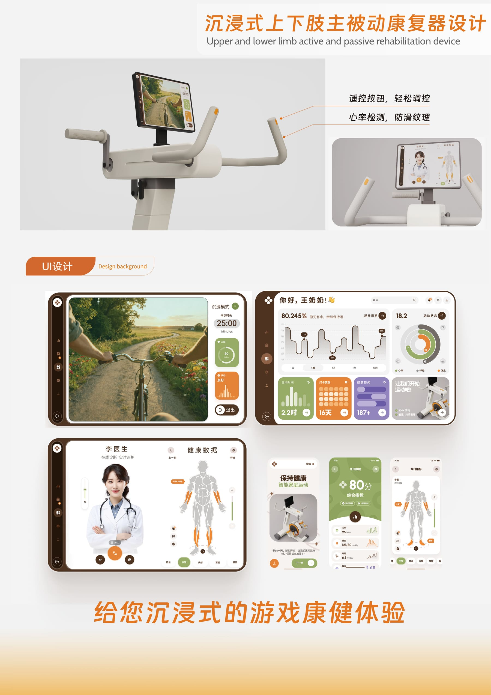

Challenge
传统康复器械偏冷硬，患者进入训练时容易紧张，界面反馈也不够友好。
医疗产品设计 · 康复训练设备
基于传统康复器械的外观、交互和使用体验改造，面向居家与机构康复场景。页面重点展示产品动态、结构创新、UI界面和人机安全关系，让项目逻辑集中在康复设备本身。

传统康复器械偏冷硬，患者进入训练时容易紧张，界面反馈也不够友好。
完成产品外观重塑、结构细节表达、训练动效整理和康复界面视觉设计。
用更温和的家居化形态、可旋转把手和清晰数据反馈降低使用门槛。
把“被动接受训练”的器械感，转化为更主动、更可持续的康复体验。
Product Demo
这个项目的核心不是重新发明康复训练动作，而是让老设备在外观、交互和家庭使用氛围上变得更容易被接受。结合前期调研照片，可以把改造逻辑清楚地转化为 before / after 的设计判断。

Research Input


新方案弱化裸露机械感，统一机身语言，用橙色提示关键操作区，并将训练反馈转移到屏幕与移动端界面中，让患者和康复师更容易理解状态。
Training Flow
低阻碍的入座路径和扶手支撑，帮助患者在第一次使用时建立稳定感。
脚部、手臂和躯干接触点围绕安全约束展开，减少训练中的误伤风险。
主动与被动训练对应不同康复阶段，通过屏幕与按键完成更清晰的切换。
心率、强度和训练状态被持续记录，帮助康复师判断下一步训练计划。
Interface


这里把展板中的多角度渲染重新切成网页视觉模块：一体式结构、按钮控制、家居化风格、娱乐性康复、前后滑轨和上半部旋转，都能直接服务于产品改造说明。
Human Scale

Board Archive


浏览者先看网页化拆解后的设计判断，再按需查看完整展板信息；这样既保留原始资料，又避免作品集页面变成比赛展板截图。